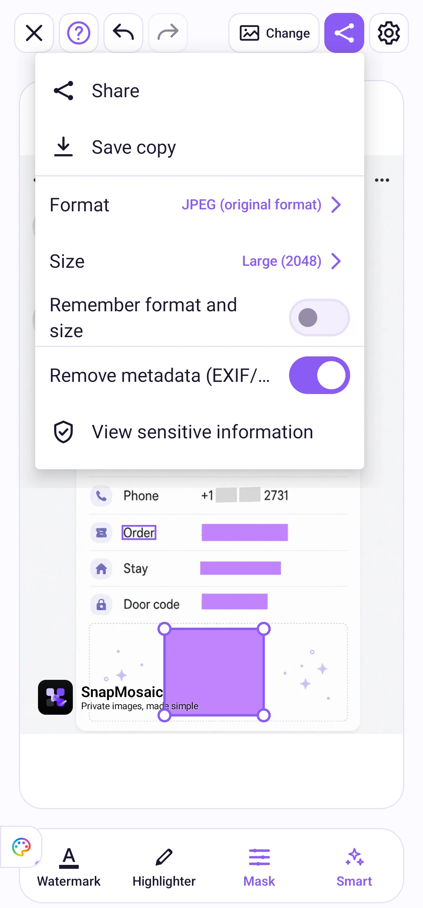
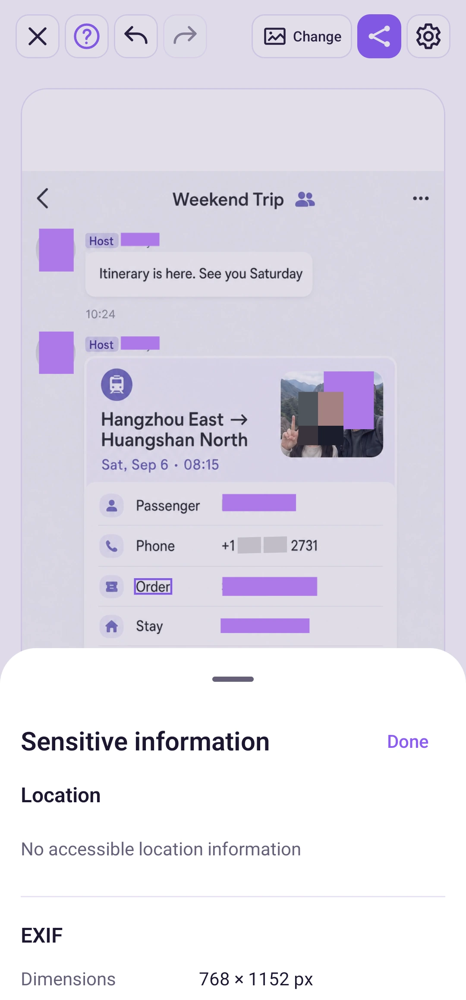

사진 편집
저장과 공유
단계별로 따라 하기
시간을 선택하면 해당 단계로 이동합니다. 자세한 조작은 전체 화면으로 확인하세요.
사용 방법
상단 도구 모음의 공유 아이콘을 누르세요. JPEG, PNG, WebP와 출력 크기를 선택하세요. 내보낸 파일에서 위치 등의 정보를 지우려면 “메타데이터 제거 (EXIF/GPS)”를 켜세요.


내보내기 옵션
원본 크기 또는 2048, 1280, 720 프리셋을 선택하세요. 형식과 크기 기억 옵션을 켜면 새 사진이나 앱을 다시 열었을 때도 선택이 유지됩니다. 이 옵션은 기본으로 꺼져 있습니다.
사진을 여러 장 열었다면 현재 사진 또는 전체 그룹을 선택할 수 있습니다. 기본값은 현재 사진입니다. 전체를 내보내기 전에 사진을 한 장씩 확인하세요.
메타데이터 제거는 GPS 위치 같은 파일 정보를 지웁니다. 사진에 보이는 주소나 글자는 가리지 않으므로 별도로 가려야 합니다.
내보내기 메뉴의 민감한 정보 보기에서 원본 이미지에 포함된 위치와 카메라, 촬영 시간 등의 EXIF 정보를 확인할 수 있습니다. 일부 이미지에는 해당 정보가 없습니다.

